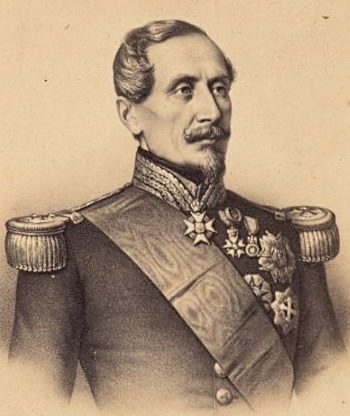
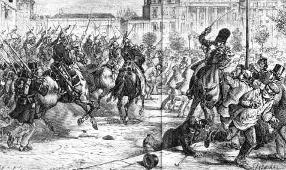

쿠데타의 학살 - 빅토르 위고의 'Napoleon Le Petit' 중에서 (마지막편)
게시: 2016-12-18T03:50:18+09:00
IV
병사들의 사격에 맞서, 바리케이드를 지키던 시민들도 약 15분간 응사하고 있었는데, 양측 모두 사상자는 전혀 없는 상태였다. 그러다 갑자기, 마치 전기 충격이라도 받은 것처럼 먼저 보병대에서, 이어서 기병대에서도 비정상적으로 위협적인 움직임이 나타났다. 부대들이 갑자기 뒤돌아 선 것이다.
쿠데타를 기록한 역사편찬가들은 상티에 가(Rue du Sentier) 모퉁이의 열린 창문으로부터 병사들에게 총탄 한 발이 날아들었다고 기록하고 있다. 어떤 이들은 노트르-담-드-르쿠브랭스 가(Rue Notre-Dame-de-Recouvrance)와 푸와소니에르 가(Rue Poissonnière)의 어떤 집 지붕으로부터 발사된 것이라고 주장한다. 또 다른 사람들은 마자그랑 가(Rue Mazagran)의 모퉁이의 높은 집 지붕에서 발사된 권총 사격이었다고도 한다. 그렇게 총탄의 발사 장소에 대해서는 이론이 많지만, 이론의 여지가 없는 부분은 이 문제의 탄환, 어쩌면 문을 꽝 닫는 정도의 소음을 냈던 이 탄환이 옆 집에 살던 치과의사에게 맞았다는 점이다. 질문은 결국 이것으로 귀결된다. 그 대로변 집들 중 하나에서 발사된 권총이나 머스켓 소총의 소리를 들은 사람이 있는가 ? 이것이 사실인가 아닌가 ? 많은 증인들은 그 점을 부인한다.
(사건이 벌어진 현장의 주요 도로명입니다.)
만약 총탄이 정말 발사되었다면, 여전히 질문이 남는다. 그것이 원인이었는가, 아니면 그저 신호였는가 ?
어쨌건 간에, 이미 언급한 대로, 갑자기 기병과 보병, 포병들이 길가 인도에 늘어선 구경꾼 인파들을 향해 갑자기 뒤돌아섰다. 그러더니, 아무도 그 이유를 몰랐고 또 예상하지 못 했지만, 아무런 동기 없이, 아침의 그 악명 높은 경고장에 쓰인 것처럼 아무런 경고도 없이, 살육이 시작되었다. 살육은 짐나즈 극장(Gymnase Theatre)으로부터 뱅 시누아(Bains Chinois, 중국 목욕탕이라는 뜻)까지, 그러니까 파리에서 가장 부유하고 인파도 많은, 가장 번화한 거리 전체에 걸쳐 일어났다.
(뱅 시누아(Bains Chinois)는 1787년 지어진 파리의 유명 공중 목욕탕입니다. 1852년에 매각된 뒤, 그 다음해에 다른 투자용 건물을 짓기 위해 철거되었습니다.)
군대는 시민들을 근접 거리에서 쏘아 쓰러뜨렸다.
그건 무시무시하고 뭐라 형용할 수 없는 순간이었다. 그 비명소리, 하늘을 향해 치켜든 팔들, 그 경악과 공포, 사방으로 달아나는 군중, 보도에 부딪힌 뒤 집 지붕까지 튀어 오르는 수많은 총알들, 순식간에 거리에 가득 쓰러진 시체들, 입에 시가를 문 채로 쓰러지는 젊은이들과 벨벳 가운을 입은 채 총을 맞은 여자들... 서적 판매원 두명은 자신들의 서점 문간에서 자신들이 뭔 일을 저질렀길래 이런 일을 당하는지도 모르는 채 살해되었다. 그 속에 누가 있든 상관없이 죽어버리라고 지하실 환기창에 대고도 사격이 가해졌으며, 시장은 포탄과 총알로 난장판이 되었다. 살랑드루즈 호텔(Hôtel Sallandrouze)은 폭발탄 포격을 받았고, 메종 도르(Maison d'Or, 황금의 집이라는 뜻)는 포도탄 포격을 받았으며, 카페 토르토니(Tortoni)에는 병사들이 난입했다. 대로에는 수백 구의 시신이 널려 있었고, 리셜리외 가(Rue de Richelieu)에는 피가 냇물처럼 흘렀다.
(카페 Tortoni는 당시 파리 시내 문인들과 멋장이들이 모이던 명소였습니다.)
나레이터는 여기서 이야기를 잠깐 멈춰야겠다.
이 이름없는 행위들의 존재에서, 이 글을 쓰고 있는 나는 나 자신을 기록관이라고 선언한다. 나는 범죄를 기록하고, 사건의 당사자를 호명한다. 내 역할은 거기까지이다. 나는 루이 보나파르트를 소환한다. 나는 생-타르노(Saint-Arnaud), 모파(Maupas), 모레(Moray), 마냥(Magnan), 카를레(Carrelet), 캉로베르(Canrobert), 그리고 레벨(Reybell), 즉 보나파르트의 공모자들을 소환한다. 나는 그 처형자들, 그 살인자들, 그 증인들과 희생자들, 달아오른 대포와 김이 나는 군도, 술에 취한 병사들과 유족들, 죽어가던 사람들, 살해된 사람들, 그 공포, 그 유혈, 그리고 그 눈물들을 모두 문명 사회의 법정으로 나오라고 소환한다.
단지 나레이터일 뿐인 이 사람의 말을, 그 나레이터가 누구이든 사람들은 믿지 않을 것이다. 그러므로, 그 생생한 사실들을, 피가 뚝뚝 떨어지는 그 사실들로 하여금 스스로 말을 하도록 하게 하자. 우리는 그 증언을 듣도록 하자.

(생-타르노는 당시 국방부 장관이었습니다. 권력 장악을 위해 시민들을 무참히 살해한 이 반란 공모자는 불과 3년 뒤 크리미아 전쟁에서 프랑스군 사령관직을 수행하다 위암으로 병사했습니다.)
V
우리는 증인들의 이름을 인쇄하지는 않을 것이다. 왜 그러는지는 이미 밝혔다. 하지만 독자들은 진실의 진지하고 신랄한 억양을 쉽게 느낄 수 있을 것이다.
한 증인은 이렇게 증언한다.
"내가 인도 위를 세 발자욱 걷기도 전에, 그 옆으로 행군해가던 부대가 갑자기 멈춰서더니 남쪽을 향해 돌아섰고, 머스켓 소총을 들어올리고는 즉각 공포에 질린 군중들에게 발포했어요.
그 사격은 20분 정도 쉬지 않고 계속 되었습니다. 가끔씩 훨씬 더 우렁찬 대포 포성도 울렸어요.
첫번째 일제 사격 때, 저는 땅바닥에 몸을 던지고는 인도 위를 마치 뱀처럼 기어서 아무 문이나 열려 있는 첫번째 문 안으로 들어갔습니다.
그건 와인 가게였어요. 산업 시장(Bazaar de l'Industrie) 바로 옆의 180번지였지요. 저는 거기 들어간 마지막 사람이었습니다. 사격은 계속 되고 있었고요.
거기에는 약 50명의 사람들이 있었습니다. 그리고 그 중에는 여자 5~6명과 아이 2~3명도 있었고요. 세명의 불쌍한 친구들은 들어올 때 이미 부상을 당한 상태였습니다. 그 중 2명은 약 15분간 끔찍한 고통에 시달리다 죽었고, 나머지 1명은 제가 4시에 가게를 나올 때도 살아 있었습니다. 하지만 나중에 결국 그 남자도 죽었다고 들었습니다.
군 부대가 어떤 사람들에게 발포한 것인지 설명하기 위해서는, 그 가게에 모인 사람들 중 몇몇에 대해 이야기하는 것이 가장 좋을 것 같습니다.
거기엔 여자도 몇몇 있었습니다. 그 중 2명은 그 구역에 저녁거리를 사려고 나온 것이었어요. 변호사의 어린 서기도 있었는데, 그는 고용인의 심부름을 나왔다가 거기 오게 된 것이었지요. 증권거래소(Bourse)의 주식 중개인 2~3명, 그리고 집 주인도 2~3명 있었습니다. 초라한 셔츠 차림이거나, 혹은 아무 셔츠도 입지 못한 일꾼 몇 명도 있었습니다. 그 가게로 대피한 불행한 사람들 중 하나가 제게 깊은 인상을 남겼습니다. 그는 약 30세 정도 되는, 회색의 짧은 외투를 입은 금발의 남자였습니다. 그는 포부르 몽마르트르(Faubourg Montmartre)에 있는 그의 가족과 식사를 하러 그의 아내와 함께 가던 중에 군 부대가 거리를 가로질러 행군하는 바람에 걸음을 멈추게 된 것이었지요. 처음에 사격이 시작되었을 때, 그와 그의 아내 둘 다 쓰러졌습니다. 그는 일어나 그 와인 가게로 끌려 들어왔지만, 그의 아내는 옆에 없었습니다. 그의 절망은 말로 표현할 수 없을 정도였습니다. 우리가 뭐라고 달래봐도 그는 계속 아내를 찾으러 달려나갈 수 있도록 문을 열어달라고 고집했지요. 밖의 거리는 포도탄 포격이 휩쓸고 있었는데 말이지요. 저희가 할 수 있는 것은 1시간 동안 그를 우리와 함께 있도록 붙잡아 두는 것 뿐이었어요. 다음 날, 저는 그 사람의 아내가 결국 살해되었고 그 시신은 시테 베르제르(Cité Bergère)에서 발견되었다고 들었습니다. 약 20일 뒤에, 저는 그 불쌍한 남편이 보나파르트에게 복수하겠다고 협박했다가 체포되어 브레스트(Brest) 항구로 보내진 뒤, 결국 카이엔(Cayenne)으로 압송되었다는 소식을 들었습니다. 그 와인 가게에 모인 사람들은 대부분 왕정주의에 찬성하는 입장을 가진 사람들이었습니다. 그 중 저는 공화주의자라고 밝힌 사람은 딱 2명을 보았는데, 하나는 전에 레폼(la Réforme, 개혁이라는 뜻)이라는 곡을 작곡한 므니에르(Meunier)라는 나이든 작곡가와 그의 친구 딱 둘이었습니다. 약 4시 쯤 되어, 저는 그 가게를 나왔습니다."
(카이엔은 적도 인근 남미 프랑스령 식민지인 기아나에 있는 일종의 감옥섬으로서, 흔히 악마의 섬(Île du Diable)이라고 불리던 곳입니다. 루이 나폴레옹이 집권한 1852년, 주로 정치범을 수용하기 위해 개설되었고, 드레퓌스 사건의 그 드레퓌스 대위도 여기서 복역했습니다. 사진 속의 오두막이 드레퓌스가 살던 곳이라고 합니다. 영화 빠삐용의 배경도 바로 카이엔입니다.)
마자그랑 가(Rue de Mazagran)에서 권총 발사 소리를 들었다고 생각하는 또 다른 증인 하나는, 이렇게 덧붙인다.
"그 권총 소리는 병사들에게 모든 가옥과 그 창문에 일제 사격을 퍼부으라는 신호였습니다. 그 무차별 사격은 최소한 30분간 계속 되었어요. 사격은 생-드니 대문(Porte Saint-Denis)부터 카페 그랑 발콩(Café du Grand Balcon)까지 동시에 일어났습니다. 곧 포격도 시작되었지요."
또 다른 증인도 말한다.
"3시 15분 경, 이상한 움직임이 일어났어요. 생-드니 대문을 향하고 서있던 병사들이 갑자기 뒤로 돌아서서 짐나즈 쪽 집들과 퐁-드-페르 관(Maison du Pont-de-Fer, 철교의 집이라는 뜻), 그리고 생-파르 호텔(Hôtel Saint-Phar)을 향하더니, 생-드니 가(rue Saint-Denis)부터 리셜리외 가(rue Richelieu)까지의 반대 편에 있는 군중들에게 즉각 연속 사격을 퍼부었습니다. 불과 몇 분만에 인도 위는 시체들로 가득했어요. 가옥들은 총알 구멍이 무수히 나 있었고, 군 부대는 약 45분간 미친 듯이 계속 총을 쏘아댔습니다."
또 다른 증인도 말한다.
"첫번째 포격은 본느-누벨(Bonne-Nouvelle)의 바리케이드에 가해졌는데, 이것이 다른 부대들에 대한 신호가 되었어요. 군 부대들은 머스켓 소총 사정거리 내의 모든 사람들에게 동시에 사격을 퍼부었습니다."
또 다른 증인도 말한다.
"어떤 말로도 그런 야만적 행동을 묘사할 수는 없습니다. 그것에 대해 말을 하고 그 말로 표현 못 할 행위의 진실에 대해 증언하려면 그 현장을 목격했어야만 해요.
병사들은 수천발을 - 숫자는 셀 수 없을 정도였지만 - 아무 짓도 하고 있지 않던 군중들에게 쏘았어요. 그럴 필요가 전혀 없었는데도요. 아주 깊은 인상을 주려는 의도였지요. 그게 전부였어요."
또 다른 증인도 말한다.
"전반적인 흥분이 고조에 달했을 때, 전열 보병대에 이어 기병대와 포병대가 대로에 도착했어요. 부대 중 누군가가 머스켓 소총을 발사했는데, 화약 연기가 수직으로 솟은 것으로 보아 그것이 공중을 향해 발사된 것이라는 것을 쉽게 알 수 있었습니다. 그것이 아무 경고없이 군중들에게 발포하고 총검으로 찌르라는 신호였습니다. 이것은 군부가 학살을 시작하는 계기를 원했다는 것을 입증하는 중요한 사실입니다."
또 다른 증인은 이런 이야기를 전한다.
"포도탄(mitraille, 산탄)이 장전된 대포가 르 프로페트(Le Prophète, 예언자라는 뜻)라는 상점부터 몽마르트르 가(Rue Montmartre)까지의 상가 전면을 찢어놓았습니다. 본느-누벨 대로로부터 메종 비으코크(Maison Billecoq)에도 포격을 가한 것이 틀림없었어요. 포탄이 오뷔송(Aubusson) 쪽의 벽 모퉁이를 때리고 벽을 관통한 뒤 집 내부까지 뚫었거든요."
(포도탄 또는 캐니스터탄이라고 불리는 이 대포알은 사진처럼 깡통 속에 작은 쇠구슬 수십개를 담은 것입니다. 대포에서 발사하면 마치 대형 산탄총을 쏜 것처럼 그 앞에 있는 적군 수십명을 한꺼번에 처리할 수 있습니다.)
...중략... (이런 증언들이 끝도 없이 계속 됩니다...)
"계속 가세요." 보호를 요청한 선량한 시민들에게 장교들이 말했습니다. 이 말을 듣고 시민들은 자신감을 가지고 가던 길을 재빨리 걸어갔지요. 하지만 그건 죽음을 뜻하는 암호일 뿐이었습니다. 불과 몇 발짝 걷기도 전에 총에 맞아 쓰러졌거든요."
다른 증인이 말한다. "대로에서 사격이 시작되던 순간에, 카펫 창고 근처에 있던 한 서점 주인이 서둘러 서점 문을 닫고 있었어요. 그때 피할 곳을 찾던 몇 명의 군중들이 거기로 들어가려 했고, 전열 보병인지 헌병인지는 잘 모르겠는데, 아무튼 군인들이 자신들에게 총을 쏜 사람이 그 중에 있지 않나 의심했어요. 군인들은 서점에 난입했고, 서점 주인은 상황 설명을 하려고 했지요. 하지만 그는 혼자 그의 서점 바로 앞으로 끌려 나왔고, 그의 아내와 딸은 그가 막 총에 맞아 쓰러질 때에야 그와 군인들 사이에 뛰어들 수 있었습니다. 그의 아내는 허벅지에 관통상을 입었고, 그 딸은 코르셋의 살대 덕분에 목숨을 건졌습니다. 이후 그의 아내는 정신이 이상해졌다고 들었어요."
이제 소름 없이는 묘사할 수 없는 세 건의 증언으로 마무리를 짓자.
"이 공포스러운 사건의 시작 부분의 15분간, 사격의 격렬함이 잠깐 다소 느슨해졌는데, 이때 부상당해 쓰러진 사람들 중 몇몇은 일어나도 되겠다는 생각을 하게 되었습니다. 르 프로페트(Le Prophète) 앞에 쓰러진 사람들 중 2명이 일어났습니다. 한 명은 불과 몇 미터 떨어진 상티에 가(Rue du Sentier)를 통해 달아났어요. 그가 달아나는 중에도 총알이 빗발쳐서 그 중 하나는 그의 모자를 날려버렸지요. 다른 한 사람은 무릎을 꿇은 상태로 몸을 일으키는 것까지만 성공했습니다. 그는 손을 꼭 쥐고 병사들에게 목숨만 살려달라고 애원했지요. 하지만 그는 즉각 총을 맞고 쓰러졌습니다. 다음날, 르 프로페트의 몇 미터 되지도 않는 베란다 옆면에 1백발 이상의 총알이 박혀 있는 것을 볼 수 있었지요."

(출처 : http://www.napoleontrois.fr/dotclear/index.php?post/2006/04/04/115-le-coup-d-etat )
"샘이 있는 몽마르트르 가의 끝 부분에서 약 60보 정도 떨어진 곳에, 남자와 여자, 엄마와 아이들, 어린 소녀들의 시체가 60구 정도 있었어요. 이 불행한 시신들은 대로 맞은 편에 배치된 군 부대와 헌병들이 발사한 첫번째 일제 사격의 희생자들이었지요. 그들은 첫번째 사격이 시작되자마자 모두 달아났지만, 불과 몇 발자욱 못 가서 쓰러졌지요. 젊은 남자 하나는 관문 안으로 피해서 대로 쪽으로 튀어나온 벽 뒤에 숨으려고 했어요. 그는 몸을 꼿꼿이 세워 몸이 벽 바깥으로 드러나는 부분을 최소화하려고 무지 애를 썼지만, 약 10분 정도 조준이 형편없는 사격을 받던 끝에, 그도 결국 총에 맞고 쓰러진 뒤 다시는 일어나지 못했어요."
또 다른 증인이다.
"퐁-드-페르 관(Maison du Pont-de-Fer)의 판유리와 창문은 모두 깨졌습니다. 그 마당에는 공포에 질려 미쳐버린 남자 하나가 있었어요. 지하실에는 거기로 대피한 여자들이 가득했는데, 아무 소용이 없었습니다. 병사들은 가게와 지하실 환풍창에 대고 총을 쐈습니다. 토르토니(Tortoni)부터 짐나즈(Gymnase) 극장에 이르기까지 비슷한 일들이 일어났습니다. 그런 일이 1시간 정도 계속 되었습니다."
(짐나즈 극장(Théâtre du Gymnase Marie-Bell)은 1820년 설립된 파리의 유서깊은 극장입니다. 지금도 공연을 하는 극장이라고 합니다.)